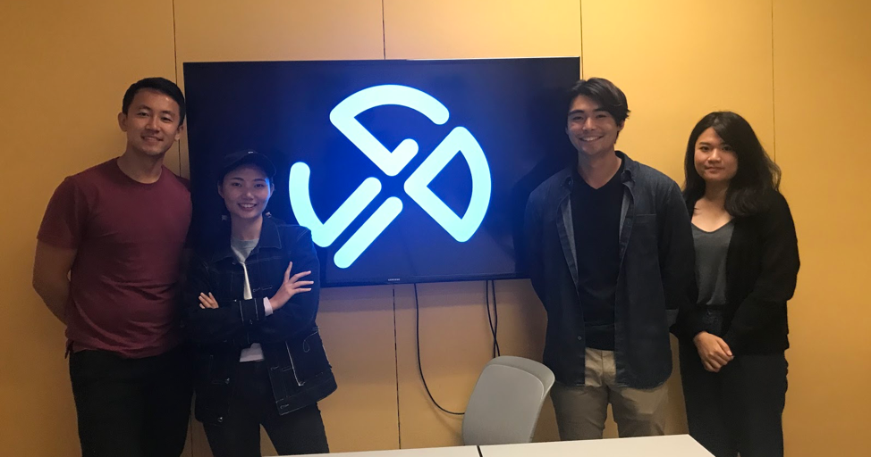
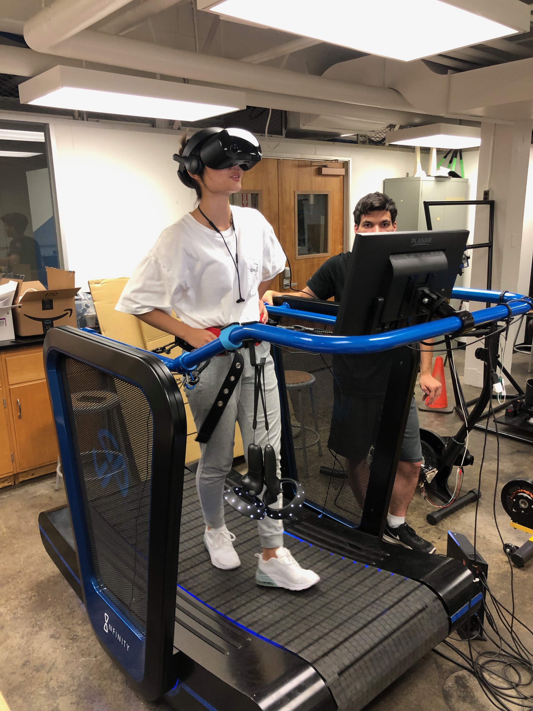

Infinity is Blue Goji's patented treadmill - the core hardware component of the Infinity VR System. The Infinity VR System is an innovative platform that integrates a user’s physical movements with their visual perception, cognitive, auditory, balance, and memory based faculties. As implied by its name, the Infinity is specifically designed for an “infinite” range of applications, from enhanced cardio workouts, sport conditioning, training programs and rehab services, to active VR gameplay and multiplayer eSports tournaments. Unlike most conventional treadmills, Infinity does not use a motorized mechanism to power the tread belt. It will not force the user to walk or run at ONE chosen speed. Instead, the user will walk or run at their own pace.
One of the key markets for the Infinity VR System is the conditioning and rehab field for older adults. As people age and become less active, falling becomes one of the most significant dangers to their health. The fear of falling and resulting inactivity, will actually exacerbate this key risk factor. The risk of falling will significantly impact the quality of life for many older adults and increase healthcare costs. Therefore, developing an effective Active Aging Conditioning and Rehab program is a central goal for Blue Goji and this became the primary goal for my capstone project in the Master's of Engineering program at the University of California, Berkeley. I along with three other team members worked with Blue Goji's Infinity to create VR experiences that diagnose the user's fall risk.
The Infinity product is equipped with a hip belt that consists of two accelerometers and tension sensors to detect a user's center of mass. It also has four pressure sensors located underneath the treadmill belt and a Kinect camera pointed at the user's feet. These sensors give us the capability to diagnose the health of a user's gait cycle.

We are currently in the process of creating 4 VR minigames to provide diagnostic information on users' fall risk. We look forward to presenting our work and results at the South By Southwest Conference in Austin, Texas in March 2020.